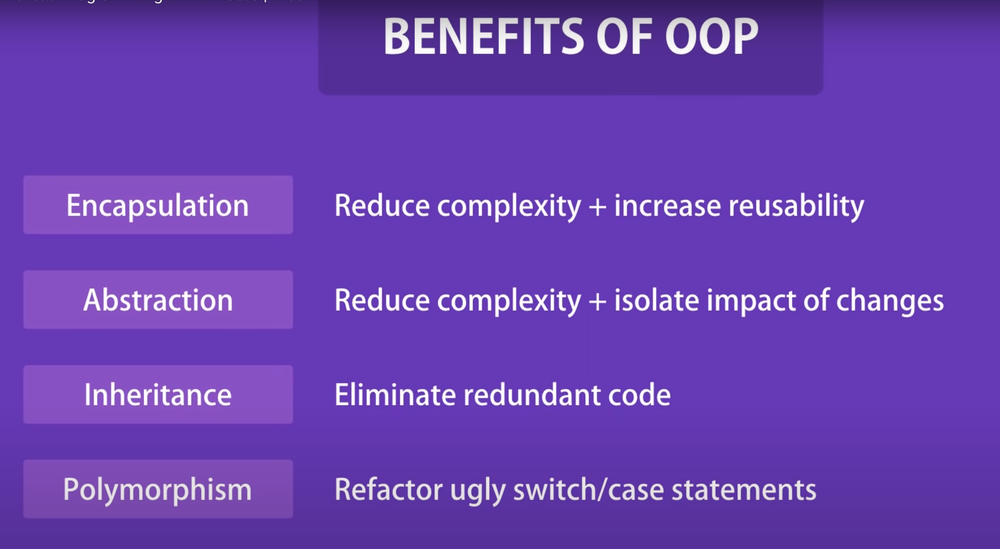

Contents
Design Patterns LLD
https://codewithmosh.com/courses/759570/lectures/13732272
Everything to do with OOP. To be a senior developer, you have to know all this. PERIOD.
The whole topic seems to revolve around removing if..else and switch kind of statements, and make code extensible. For every new feature in a code, multiple if..else might be needed, implementation might be required to be updated in many places. To solve this, design patterns seems to be used.
Static Methods - These can only be accessed from the class level, not object level. These have one memory location. Abstract Class - This can not be instantiated, object can not be made from it. Only child class can extend from it. Interface - Like abstract class, but this can not have any method implementation. These have only method signatures. - extends: use this on interface to create another interface. - implements: use this on interface to create a concrete class from interface. Concrete Class - This is an actual class created from abstract class or interface
Generic Class - In typeScript Course - https://codewithmosh.com/courses/1779784/lectures/40256281
Basics
 Classes - Parent, which has objects and methods Coupling - If user class changes, main class breaks and also all other classes are to be re-compiled Interfaces - To address coupling issue, interface is made. A template to create class. In python its called abstract class. Keywords - implements override Encapsulation - If we need validations in setting a variable given in parent class, so we make private variables in user class, and change them using getter and setter with validations as needed. Abstraction - Removing complexity from end user and then creating a parent method, by chaining complex methods and expose parent method to user. Keyword: private public OR __ in python Inheritance - Inheriting methods and vars from parent Polymorphism - Many forms. Object instance having many forms. Abstract class in JAVA. Keywords - extends and override. UML - Unified Modeling Language - https://codewithmosh.com/courses/759570/lectures/13732320 Composition - When we create class by combining various other classes as needed.
Principles and SOLID
Refer SOLID Principles By Uncle Bob Single Responsibility Principle - Each class should do only one thing. Open Closed Principle - Class should be OPEN for extension and CLOSED for modification. Change in one class should not affect other classes - Iterator pattern Favor Composition over inheritance
Sections
Behavioural - related to classes and their interactions.
01 Momento Pattern -- Undo pattern - Single Responsibility Principle 02 State Pattern -- Based on state of one, the behavior of certain item change 03 Iterator Pattern -- Like browser history, push pop. like momento, but it gets dependent on a Iterator class, which is an interface. 04 Strategy Pattern -- Like state pattern, BUT each class item, refers a strategy class, which further have different methods 05 Template Method Pattern -- Instead of interface, we use Abstract Methods, to define methods. 06 Command Pattern -- Disconnect Invoker of a command, from the received of the command. 07 Observer Pattern -- Pull Push, Pub Sub type. Subscribe and unsubscribe. 08 Mediator Pattern -- Multiple Objects need to communicate to each other at every instance. A mediator abstract class is introduced. 09 Chain of Responsibility Pattern -- Handler and pipline based system. 10 Visitor Pattern --
Structural - related to objects and their interactions.
11-Composite-Pattern -- Hierarchy data related. Groups or groups. 12-Adapter-Pattern -- We wish to use different types of class, objects, vars using the same class. 13-Decorator-Pattern -- Adding features to a base interface and using them in various combinations. 14-Facade-Pattern -- Used to decouple classes. Main class interacts with a class, which further talks to classes. 15-Flyweight-Pattern -- Reducing memory usage in class. An object when needs to be shared with various classes. 16-Bridge-Pattern -- When multiple hierarchy present, and each can grow independently. Feature hierarchy is separated from Implementation Hierarchy 17-Proxy-Pattern -- An agent or proxy created between objects. Concept of LAZY INITIALIZATION. Loading only those objects which are needed on demand.
Creational - related to creating objects from classes and interfaces.
18-Prototype-Pattern -- A base interface is defined called prototype and concrete classes are created from it. 19-Singleton-Pattern -- When we only need one instance of a class. Like configurations of a script. 20-Factory-Method-Pattern -- Defer creation of an object to subclass. 21-Abstract-Factory-Pattern -- Provide an interface for creating families of related objects. 22-Builder-Pattern -- Separate the CONSTRUCTION of an object from its REPRESENTATION.